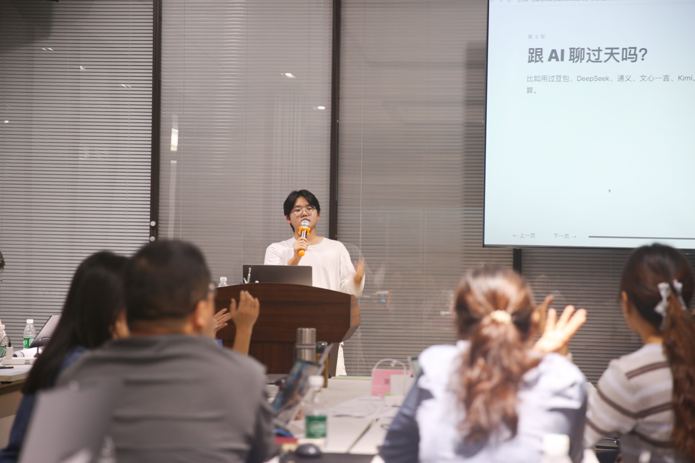

阿里千问 · 企业 AI 交付
2026.10 — 至今AI 工程师（FDE）
面向企业客户开展需求澄清、场景选择、Agent 与知识库方案验证，以及培训和交付跟进。把业务人员的经验翻译成任务、数据要求和验收条件，协同推进落地。
重点项目与交付 ↓我是郭一恒，AI 工程师（FDE），负责阿里千问企业 AI 项目交付。走进客户现场，听懂业务、拆解流程，和业务人员一起把场景做成能演示、能验证、能继续使用的方案。

广东兆天 · 企业 AI 培训与场景辅导
我做企业 AI 落地交付。工作从客户的日常业务开始，理清一笔订单、一次交接、一项异常怎么处理，再判断哪里值得引入 AI、需要什么资料、怎样验证结果。
我的实践覆盖制造业、专业服务和研发场景，工作涉及客户需求沟通、广东兆天企业 AI 培训、通号院真实数据代码审查 PoC，以及奎达官网与智能客服的商业交付。也用 AI 辅助开发演唱会场馆体验，持续在公众号、抖音和小红书分享实践与作品。
从业务问题到场景验证，把每个阶段该交付的东西做清楚。
AI 工程师（FDE）
面向企业客户开展需求澄清、场景选择、Agent 与知识库方案验证，以及培训和交付跟进。把业务人员的经验翻译成任务、数据要求和验收条件，协同推进落地。
重点项目与交付 ↓企业 AI 产品设计与交付
承接企业 AI 应用项目，结合技术能力与企业业务资源，直接对接企业负责人，承担需求研究、AI 产品方案、实施推进及交付跟进。将 AIGC 产品研究与效果验证经验迁移到企业场景，从 AI 辅助资料整理扩展至 Prompt、Agent 与官网。
需求与统筹：梳理企业负责人及业务人员的工作方式，判断适合引入 AI 的环节，将诉求转为产品任务，确定优先级与交付边界，持续跟进需求变化。
技术与业务协作：衔接技术支持、企业资料与业务反馈，围绕实现可行性、内容口径及交付要求沟通；横跨需求、Prompt、Agent 配置与官网实现，推进验证、实施和上线。
上线与维护：区分需求、资料及模型输出问题，推进调整与复验；完成郑州奎达官网与客服 Agent 交付，提供可维护的知识库框架，承担企业沟通及后续维护。
理解业务 问清工作怎么流转、资料从哪里来、关键决定由谁做。
做出样例 把规则、数据和异常处理放进可演示的流程，与业务人员逐项核对。
交给人使用 通过培训、实操与复盘，把使用方法、人工确认和后续验证接起来。
从企业培训到商业交付与代码 PoC，展示代表性案例中的个人贡献和验证成果。
从企业业务调研、课程反复打磨，到 11 月 7—9 日的三天驻场培训，围绕真实岗位工作辅导学员找场景、做演示，并深入车间核对染整排缸的规则。
业务与课程：梳理从研发打样、生产、品质到交付的业务链，将 AI 认知、场景拆解七步法、提示词与动手练习串起来，现场根据学员的理解和卡点调整内容。
车间走访：沿生产流程核对排缸中的容量、颜色、工艺、交期与洗缸条件，向研发技术人员和一线师傅追问规则与例外。
场景演示：围绕合同字段、候位就绪与洗缸完工记录制作交互演示。资料不齐时保留疑点，交给业务人员复核，让建议和依据一起呈现。
试点设计：整理同一班次回放所需的数据清单、人工原排与验证口径，为后续试点明确输入和验收条件。
交付成果：完成课程、现场培训、场景辅导与交互演示，整理业务规则和试点数据清单。案例展示范围为培训与场景验证，生产接入及收益评估需另行验收。
基于通号院提供的企业真实数据，开展代码修改与安全审查 PoC 验证，检查按文字需求修改代码、输出差异、运行验证和识别安全风险的流程。
代码修改：验证订单状态查询、取消规则调整、废弃方法删除、输入校验、SQL 查询与凭据配置修改，并检查修改差异、编译与回归结果。
安全审查：围绕查询条件拼接、排序参数和硬编码凭据等风险写法，检查能否给出文件、行号、依据和修复建议，同时设置参数绑定、白名单和固定常量等安全对照。
验证实践：在企业真实数据上运行代码修改与审查任务，核对修改结果、风险依据和验证输出，形成 PoC 阶段的实践经验。
验证范围：基于企业真实数据开展 PoC，结论以本次任务与数据范围为准。
面向工程服务企业非工作时段咨询缺少承接、业务知识分散和线上入口不足的问题，设计基础咨询、知识查询与专业人员对接服务。
产品定位：将客服定位为基础咨询与专业人员对接入口，避免替代专业造价判断；将官网纳入方案，连接业务展示、在线问答和电话联系。
平台与知识：从知识接入、流程编排、发布及维护比较 Dify、FastGPT 与 Coze，采用 Dify、DeepSeek、RAG 与 Bocha Search。整理资料与 FAQ，标注来源、适用地区与规格、更新时间及有效期，明确对外使用范围及更新责任。
验收与异常定位：分别检查检索是否找到信息、回答是否有资料支持；对资料不足、过期信息和专业问题检查澄清与人工引导。材料价格仅提供有地区、规格、时间与来源的参考区间。通过事件流定位异常并调整输入结构。
成果：完成官网、域名、部署、客服嵌入及 RAG 知识库框架，实现项目商业交付。同类测试问题口径下，系统提示词长度降低 17.7%，总输入 Token 降低 19.8%。
用 AI 辅助设计和开发，把兴趣做成可体验的产品，再通过内容分享、用户反馈和持续迭代，把体验往前推进。
面向演唱会观众的网页三维体验，串起选位置、观演、手机取景、音乐与天空秀等互动。围绕加载、声音、设备兼容和后排选座反馈持续改进。
负责需求判断、体验设计、范围取舍、上线验证与迭代，使用 AI 辅助代码实现。
进入万兽之境 ↗围绕邓紫棋巡演创作独立的三维概念现场，把场馆、舞台、音乐和观演交互组织成可以在浏览器进入的主题体验。
从舞台表现、素材和交互到加载与设备适配，持续完善上线后的使用体验。
进入 GLORIA 现场 ↗两款作品均为非官方主题体验，部分场馆、排座与演出效果为模拟呈现。
在公众号、抖音和小红书分享产品体验、FDE 一线实践、AI 方法与创作过程，将用户的评论和问题带回产品迭代。
1,000+曾单日新增粉丝
数十万相关内容浏览量
把现场经验整理成可操作的方法，从选择场景、定义验收，到试点推进、模型评测和 AIGC 制作。
定目标、说现状、找卡点、定标准、拆任务、评价值、锁场景。先把每天的工作说清楚，再决定 AI 接哪一段。
从业务调研、场景选择到数据准备、演示验证、试点验收与使用交接，把每一步的输出和下一步衔接起来。
定目标 → 定维度 → 设计评测集 → 定打分标准 → 评分校准 → 批量评测 → 输出报告。
核心是固定任务、输入输出口径和评分规则，用任务完成度、逻辑边界与成本解释选型；失败案例必须对应优化建议。评测模板提供方法，不替代具体模型的实测结果。
查看工作流与模板 ↗从真实任务出发，走通输入、处理、确认、修改和导出的路径。AIGC 创作拆解尤其关注角色与风格约束、生成状态、局部返工，以及模型能力与产品承诺之间的差距。
查看 AI 产品拆解 Skill ↗先确认故事、人物和分镜，再生成候选素材；通过镜头清单保存采用区间、声源和版本。发现问题后回查源镜头，按素材错误、音轨冲突、文字可读性或叙事断点选择修复动作，再逐镜复验。
查看制作 SOP 与案例 ↗结合企业交付、模型评测和短剧制作，整理操作方法、案例与练习模板。
从现有流程找卡点，写清输入、输出、验收条件，选出值得先做的场景。
阅读方法与场景卡 →用七步工作流连接调研、数据、演示、验证与交接，明确每阶段的交付物。
阅读交付工作流 →以奎达智能客服为案例，拆解业务访谈、RAG、联网检索、人工兜底与上线验收。
阅读完整教程 →从剧本任务出发，明确完成度、逻辑边界和预算，用失败案例解释选型并留下复用模板。
阅读完整教程 →从故事和镜头卡开始，处理角色、道具与声音问题，把验收落实到镜头、时间码和声轨。
阅读完整教程 →从故事到成片，持续打磨人物、画面与声音的制作流程。
将参赛短片中的母女关系延展为六集有声短剧，围绕人物、道具、音画一致性，建立从故事设计到逐镜验收的制作流程。
制作规划：负责故事、分镜、生成与验收，把人物目标、服装、道具状态、说话人和准确台词写入镜头卡，组织跨集因果与前置片。
问题修复：把双手机、口型错位和重复人声定位到具体镜头与秒段，替换问题素材、裁掉异常尾段、停用重复声轨；用 Pillow 绘制正确文字并透视贴合，修复手机名单乱码。
交付方式：通过 JSON 镜头清单与 FFmpeg 管理裁切、声源及合成，采用静音看、独立听、带声逐镜和六集连看的验收流程，开源制作 SOP、渲染代码、返工案例与成本核算方法。
成本口径：视频及其他 AI 生成共消耗 11,460 积分，包含候选生成与返工；完成六集短剧及预热片、宣传片，公开制作 SOP、返工案例与渲染代码。
企业交付之外的产品探索与交流经历。
分享 FDE 现场、企业 AI 方法与 AIGC 创作。